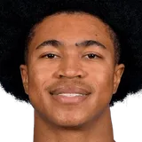

His best final NBA finish was #10 of 30, with the 2022-23 Cleveland Cavaliers. In his 220 games for 3 teams over 5 seasons they went 116–104 (52.7%), +12 games over .500, with an average final finish of 17.8. The biggest one-season rise in his career: the Memphis Grizzlies went from #24 in 2023-24 to #12 in 2024-25.
Final NBA finish, season by season
Title Finals Other playoffs Missed. #1 = champion; the dashed line is last place that season. Each point opens that season's final standings.
All 30 teams ranked in 2022-23, his best finish (#10)Teammate help
 Donovan Mitchell4.01 season
Donovan Mitchell4.01 season Jaren Jackson Jr1.51 season
Jaren Jackson Jr1.51 season Evan Mobley1.22 seasons
Evan Mobley1.22 seasons
Career
Regular seasons 1946-47 to 2026-27, games through Nov. 17, 2026. Records include 2026-27 to date; season counts and finishes use completed seasons. Each card opens its board. How we count.
Latest completed seasons
- 2024-25
 Memphis Grizzlies: #12 of 30, 48–34 · Lost 1st round 0–4
Memphis Grizzlies: #12 of 30, 48–34 · Lost 1st round 0–4  OKC
OKC - 2023-24 Memphis Grizzlies: #24 of 30, 27–55 · Missed
- 2022-23
 Cleveland Cavaliers: #10 of 30, 51–31 · Lost 1st round 1–4
Cleveland Cavaliers: #10 of 30, 51–31 · Lost 1st round 1–4  NYK
NYK
Season by season
Newest first; every header sorts. Final NBA finish is the team's rank among all teams that season (#1 = champion) and opens that season's standings. "Without him" uses the team-season window; the span line counts only the games between his first and last game for the team.
| 2024-25 | #12 of 30 | 48–34 58.5% | Lost 1st round 0–4 | 17 of 82 | 7–10 41.2% | 41–24 63.1%span: 3–3, gap −8.8 | −21.9 | |
| 2023-24 | #1 of 30 | 64–18 78.0% | Title 4–1 | 19 of 82 | 15–4 78.9% | 26–8 76.5%span: 21–8, gap +6.5 | +2.5 | |
| 2023-24 | #24 of 30 | 27–55 32.9% | Missed | 19 of 82 | 7–12 36.8% | 2–11 15.4%span: 2–6, gap +11.8 | +21.5 | |
| 2022-23 | #10 of 30 | 51–31 62.2% | Lost 1st round 1–4 | 62 of 82 | 39–23 62.9% | 12–8 60.0%span: 12–7, gap −0.3 | +2.9 | |
| 2021-22 | #17 of 30 | 44–38 53.7% | Lost play-in | 63 of 82 | 35–28 55.6% | 9–10 47.4%span: 9–9, gap +5.6 | +8.2 | |
| 2020-21 | #26 of 30 | 22–50 30.6% | Missed | 40 of 72 | 13–27 32.5% | 9–23 28.1%span: 6–12, gap −0.8 | +4.4 |
On/off, starts and close games
From the lineup data, 1996-97 on. On/off is net points per 100 possessions with him on the floor minus off, a different unit from the win-rate gaps. Started and off the bench are team records in those games; close games are those within 5 points in the last 5 minutes with him on the floor.
| 2024-25 | +31.7 | 1–0 100.0% | 6–10 37.5% | 2–0 100.0% | |
| 2023-24 | −15.2 | 1–0 100.0% | 14–4 77.8% | N/A | |
| 2023-24 | +16.8 | 0–2 0.0% | 7–10 41.2% | 6–2 75.0% | |
| 2022-23 | −7.2 | 15–10 60.0% | 24–13 64.9% | 5–5 50.0% | |
| 2021-22 | −4.5 | 9–4 69.2% | 26–24 52.0% | 7–7 50.0% | |
| 2020-21 | −0.8 | N/A | 13–27 32.5% | 4–2 66.7% |
Teammate help by season
Help = Teammates Score points for honors won that season by teammates who shared a game with him. How help works.
- 2024-25Memphis Grizzlies
Jaren Jackson Jr All-StarAll-Def 2nd12 g
 Zach Edey All-Rookie 1st15 g
Zach Edey All-Rookie 1st15 g
Jaylen Wells All-Rookie 1st14 gEntering help and the other teammates
Entering the season: 0.1 · from GG Jackson (0.1)
No honors that season: Scotty Pippen Jr 15 g, Desmond Bane 15 g, Vince Williams Jr 13 g, Jay Huff 13 g, John Konchar 13 g, Luke Kennard 13 g, Cam Spencer 11 g, GG Jackson 11 g, Ja Morant 11 g, Santiago Aldama 8 g, Marvin Bagley 8 g, Brandon Clarke 7 g, Yuki Kawamura 2 g
- 2023-24
 Boston Celtics
Boston Celtics
 Jaylen Brown Finals MVPAll-Star18 g
Jaylen Brown Finals MVPAll-Star18 g Jayson Tatum All-NBA 1stAll-Star18 g
Jayson Tatum All-NBA 1stAll-Star18 g Jrue Holiday All-Def 2nd17 g
Jrue Holiday All-Def 2nd17 g Derrick White All-Def 2nd17 g
Derrick White All-Def 2nd17 g
Entering help and the other teammates
Entering the season: 12.0
No honors that season: Sam Hauser 19 g, Payton Pritchard 19 g, Al Horford 15 g, Oshae Brissett 15 g, Kristaps Porzingis 14 g, Sviatoslav Mykhailiuk 14 g, Dalano Banton 13 g, Luke Kornet 13 g, Neemias Queta 12 g, Jordan Walsh 3 g, JD Davison 2 g, Drew Peterson 1 g
- 2023-24Memphis Grizzlies
 GG Jackson All-Rookie 2nd17 g
GG Jackson All-Rookie 2nd17 g
Entering help and the other teammates
Entering the season: 5.0 · from Jaren Jackson Jr (5.0)
No honors that season: Jake LaRavia 16 g, Santiago Aldama 15 g, Jaren Jackson Jr 13 g, Vince Williams Jr 11 g, Luke Kennard 11 g, Trey Jemison 10 g, Jordan Goodwin 10 g, Scotty Pippen Jr 8 g, Ziaire Williams 7 g, John Konchar 7 g, Matthew Hurt 5 g, Yuta Watanabe 5 g, Derrick Rose 4 g, Maozinha Pereira 4 g and 8 more
- 2022-23Cleveland Cavaliers
Donovan Mitchell All-NBA 2ndAll-Star48 gEvan Mobley All-Def 1st59 g
Entering help and the other teammates
Entering the season: 3.2 · from Darius Garland (1.0), Jarrett Allen (1.0)
No honors that season: Cedi Osman 57 g, Isaac Okoro 56 g, Caris LeVert 56 g, Darius Garland 52 g, Jarrett Allen 51 g, Raul Neto 38 g, Ricky Rubio 29 g, Kevin Love 29 g, Robin Lopez 28 g, Dean Wade 28 g, Mamadi Diakite 19 g, Isaiah Mobley 9 g, Danny Green 8 g, Sam Merrill 5 g and 1 more
- 2021-22Cleveland Cavaliers
 Darius Garland All-Star52 g
Darius Garland All-Star52 g Jarrett Allen All-Star43 gEvan Mobley All-Rookie 1st56 g
Jarrett Allen All-Star43 gEvan Mobley All-Rookie 1st56 g
Entering help and the other teammates
Entering the season: 0.1 · from Isaac Okoro (0.1)
No honors that season: Kevin Love 59 g, Isaac Okoro 52 g, Cedi Osman 51 g, Lauri Markkanen 48 g, Dylan Windler 42 g, Dean Wade 35 g, Brandon Goodwin 32 g, Ed Davis 26 g, Ricky Rubio 20 g, Rajon Rondo 20 g, Kevin Pangos 19 g, Caris LeVert 18 g, Moses Brown 14 g, Denzel Valentine 14 g and 5 more
- 2020-21Cleveland Cavaliers
 Isaac Okoro All-Rookie 2nd37 g
Isaac Okoro All-Rookie 2nd37 g
Entering help and the other teammates
Entering the season: 0
No honors that season: Dean Wade 37 g, Cedi Osman 33 g, Darius Garland 31 g, Collin Sexton 31 g, Damyean Dotson 25 g, Jarrett Allen 24 g, JaVale McGee 22 g, Larry Nance Jr 21 g, Dylan Windler 20 g, Taurean Prince 17 g, Brodric Thomas 16 g, Andre Drummond 14 g, Kevin Love 11 g, Isaiah Hartenstein 9 g and 7 more
Compare with a peer
Suggested peers need 300+ career games. Pick anyone below.
Record against each opponent
Regular season, completed seasons: 220 games, 116–104, against 30 franchises. Grouped by franchise (named as today); game lists keep each team's name that season.
| Games list | |||||||
|---|---|---|---|---|---|---|---|
| 12 | 6–6 | 50.0% | 0 | N/A | 2020-21 to 2023-24 | ||
| 12 | 7–5 | 58.3% | +2 | N/A | 2020-21 to 2023-24 | ||
| 10 | 8–2 | 80.0% | +6 | N/A | 2020-21 to 2023-24 | ||
| 10 | 3–7 | 30.0% | −4 | N/A | 2020-21 to 2023-24 | ||
| 9 | 2–7 | 22.2% | −5 | N/A | 2020-21 to 2024-25 | ||
| 9 | 7–2 | 77.8% | +5 | N/A | 2020-21 to 2023-24 | ||
| 9 | 7–2 | 77.8% | +5 | N/A | 2021-22 to 2023-24 | ||
| 9 | 7–2 | 77.8% | +5 | N/A | 2021-22 to 2024-25 | ||
| 9 | 4–5 | 44.4% | −1 | 0–1 (0–2 in games) | 2020-21 to 2024-25 | ||
| 8 | 5–3 | 62.5% | +2 | N/A | 2021-22 to 2024-25 | ||
| 8 | 2–6 | 25.0% | −4 | N/A | 2020-21 to 2024-25 | ||
| 8 | 7–1 | 87.5% | +6 | N/A | 2020-21 to 2023-24 | ||
| 8 | 4–4 | 50.0% | 0 | N/A | 2020-21 to 2023-24 | ||
| 8 | 2–6 | 25.0% | −4 | N/A | 2020-21 to 2024-25 | ||
| 8 | 5–3 | 62.5% | +2 | 0–1 (0–2 in games) | 2020-21 to 2022-23 | ||
| 8 | 5–3 | 62.5% | +2 | N/A | 2020-21 to 2024-25 | ||
| 7 | 4–3 | 57.1% | +1 | N/A | 2020-21 to 2023-24 | ||
| 7 | 4–3 | 57.1% | +1 | N/A | 2020-21 to 2023-24 | ||
| 7 | 4–3 | 57.1% | +1 | N/A | 2020-21 to 2024-25 | ||
| 7 | 3–4 | 42.9% | −1 | N/A | 2020-21 to 2024-25 | ||
| 7 | 4–3 | 57.1% | +1 | N/A | 2020-21 to 2023-24 | ||
| 6 | 1–5 | 16.7% | −4 | N/A | 2020-21 to 2024-25 | ||
| 6 | 3–3 | 50.0% | 0 | N/A | 2020-21 to 2023-24 | ||
| 6 | 2–4 | 33.3% | −2 | N/A | 2020-21 to 2024-25 | ||
| 5 | 2–3 | 40.0% | −1 | N/A | 2020-21 to 2022-23 | ||
| 4 | 3–1 | 75.0% | +2 | N/A | 2021-22 to 2024-25 | ||
| 4 | 0–4 | 0.0% | −4 | N/A | 2020-21 to 2022-23 | ||
| 4 | 3–1 | 75.0% | +2 | N/A | 2021-22 to 2024-25 | ||
| 3 | 1–2 | 33.3% | −1 | N/A | 2023-24 to 2024-25 | ||
| 2 | 1–1 | 50.0% | 0 | N/A | 2022-23 to 2024-25 |
Rows add up to his career record in his games. A playoff series counts when he played in it; early round-robin games show as games only. How we count.
Playoffs, with and without him
| 2024-25 | Lost first round to | #12 of 30 | 2 of 4 | 0–2 0.0% | 0–2 0.0% | 0.0 | |
| 2022-23 | Lost first round to | #10 of 30 | 2 of 5 | 0–2 0.0% | 1–2 33.3% | −33.3 |
Arrival and departure
Team wins per 82 games the season before he arrived vs his first season there, and his last season vs the season after he left. Per 82 so short seasons compare fairly. These are team records, not a measure of what he did.
| Left | 2025-26 | 2024-25: 48–34 48.0 per 82 | 2025-26: 25–57 25.0 per 82 | −23.0 wins | |
| Left | 2024-25 | 2023-24: 64–18 64.0 per 82 | 2024-25: 61–21 61.0 per 82 | −3.0 wins | |
| Arrived | 2023-24 | 2022-23: 57–25 57.0 per 82 | 2023-24: 64–18 64.0 per 82 | +7.0 wins | |
| Arrived | 2023-24 | 2022-23: 51–31 51.0 per 82 | 2023-24: 27–55 27.0 per 82 | −24.0 wins | |
| Left | 2023-24 | 2022-23: 51–31 51.0 per 82 | 2023-24: 48–34 48.0 per 82 | −3.0 wins | |
| Arrived | 2020-21 | 2019-20: 19–46 24.0 per 82 | 2020-21: 22–50 25.1 per 82 | +1.1 wins |
Seasons split between teams
Each team's record before his first game for it, inside his window (games with and without him) and after his last game, in the seasons he played for two or more teams.
| 2023-24 | Oct. 30, 2023 to Feb. 4, 2024 | N/A | 41–12 77.4% | 23–6 79.3% | 19 | |
| 2023-24 | Feb. 12, 2024 to April 10, 2024 | 18–32 36.0% | 9–23 28.1% | N/A | 19 |
Best duos
Team record in regular-season games both played, top 10 by win %, at least 50 games together.
- Evan Mobley
68–47 59.1%
- Jarrett Allen
69–49 58.5%
 Caris LeVert
42–32 56.8%
Caris LeVert
42–32 56.8% Dylan Windler
35–30 53.8%
Dylan Windler
35–30 53.8%- Darius Garland
72–63 53.3%
- Dean Wade 53–47 53.0%
 Kevin Love
52–47 52.5%
Kevin Love
52–47 52.5% Cedi Osman
74–67 52.5%
Cedi Osman
74–67 52.5%- Isaac Okoro
76–69 52.4%